来源：https://wandouyin.feishu.cn/docx/C3OoddYguoqBJ2xHmP3c1gEBndf
本文是“如何让你关注的牛人看见你”主题在AI探索家社群2025年1月14日的微信分享版，
全文5800+文字，预计阅读时长15分钟
也可参见下方⬇️的文字稿版本，内容一致，可以根据自己的阅读偏好选择～
感谢，那我就开始今天的分享了～
大家好，我是刘笑长，喜欢“笑”，做增“长”。
感谢刀姐的邀请，今天由我来分享一下“被牛人看见”的一些方法论和故事。
我一直从事广告行业，对整个移动广告生态比较熟悉，如移动广告平台搭建，广告商业化变现，智能广告投放等。
先来讲述一下我与AI探索家的故事，我2023年2月8日加入AI探索家的前身AI风向标，然后一直追随至今。
2025年1月2日开始在AI探索家社群活跃
2025年1月11日被刀姐看见～
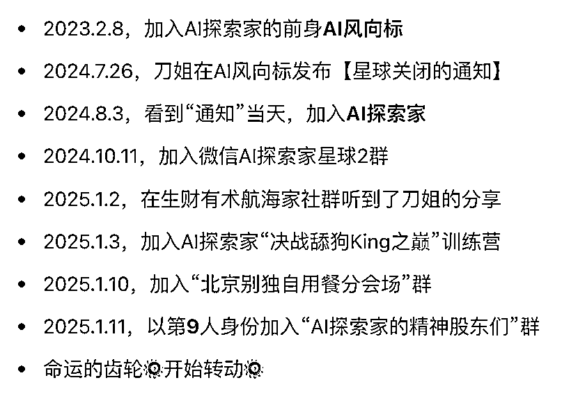
本次分享大概30分钟，主要包含以下几个方面，期望对大家有所启发或帮助～
分享大纲
1、被看见的价值和意义
2、你要看到“贵人”，也要让“贵人”看到你
3、贵人可遇不可求
4、贵人都是相互的，不存在他是你的贵人，你不是他的贵人
5、被看见、被认可、被需要、被依赖、被推荐
6、舔狗训练营的终局是什么
7、案例应用篇：如何被AI探索家黄小刀看见
8、案例讨论篇：如何被生财有术亦仁看见
9、彩蛋环节
接下来，进入第一部分：《被看见的价值和意义》
被看见是种能力
你在职场中被看见，就更容易获得升职、加薪的机会
你在创业中被看见，就更容易获得合作、投资的机会
你在情场中被看到，就更容易获得xxx、xxx的机会
你在社群中被看到，就更容易获得分享、协作的机会
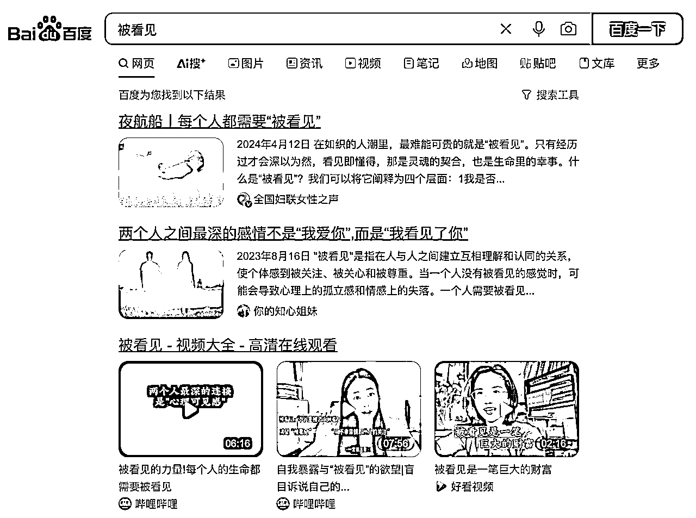
在百度平台搜索“被看见”，我们会看到以下描述
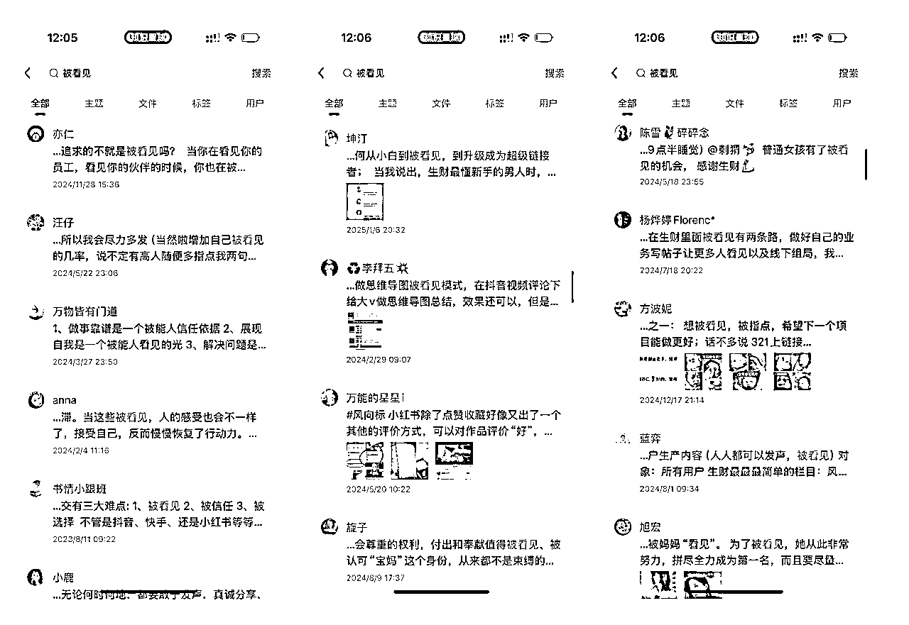
在中国最大口碑最好的生财有术社群，搜索“被看见”，你也会看到很多大佬关于“被看见”的描述：
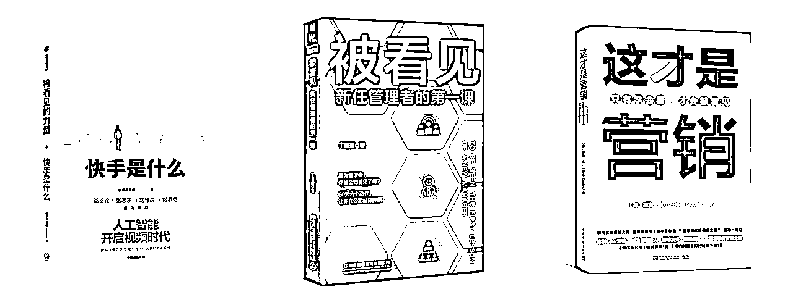
而快手做为一个国内的超级媒体平台，其描述“快手是什么”也提到了“被看见的力量”，还有其他书籍对“被看见”的描述：
无论搜索平台、还是社群，亦或者书籍，都提到了“被看见”的价值和意义
接下来，我们一起看一下，如何做，才能更好的被看见，科学的被看见～
接下来，进入第二部分：《你要看到“贵人”，也要让“贵人”看到你》
咱们先给本次分享的“贵人”下一个具象化的定义：
要想让贵人看到你，首先你要先看到贵人。
正如前面书籍《这才是营销》封面提到的：“只有学会看，才能被看见”。
这里还是先拿我和刀姐的故事来举例。
在刀姐看到我之前，其实，我在N个不同的场景下看到了刀姐～
我看到了刀姐在做一件有价值、有意义的事情：
她在AI时代重塑了生产关系；
她在搭建AI时代的生态系统；
她在游戏化自己的生意模型。
AI时代，无论是大模型提示词还是Agent、RPA，本质改变的是生产力，刀姐通过AI探索家社群重塑了生产关系：
她成了一个个项目的发起者，而社群成员成了重要参与者和负责人。
刀姐只需要通过科学的判断喊一句：“开始”，来启动这个项目～
生产关系的改变，必然也会反作用于生产力的提升。
而可以重塑生产关系的人，必是大格局大智慧之人～
所谓的新牛马计划，就是新New Money计划：
通过社群成员主动挖掘项目，激发社群的成员的积极能动性；
刀姐在合适的时机，协助解决供应链、投资、游戏发行等成员无法链接的资源，成为AI时代的孵化器，
而随着项目的增多与壮大，逐步形成一个AI探索家的生态系统。
除了生产关系的重塑、生态系统的搭建，刀姐还在社群运营中引入了游戏化机制：
在活动中加入一系列游戏化机制，让大家在社群中成长就像在玩游戏一样快乐。
AI探索家，起于社群，不止社群～
近期，遇到了刀姐，我也终于重新明白领悟了什么叫“三生有幸”：
好，我看到刀姐后，我是如何一步一步让刀姐看见我的呢？
1、加入“决战舔狗king之巅”训练营
2、积极表现
3、争取机会
后面的故事大都在咱们的“决战舔狗King之巅”微信群里了～
在报名组队阶段，我抢占了第二组，第一组是“带好口赵女士”、第三组是“要自己煮面条”，AI探索家的2位大佬
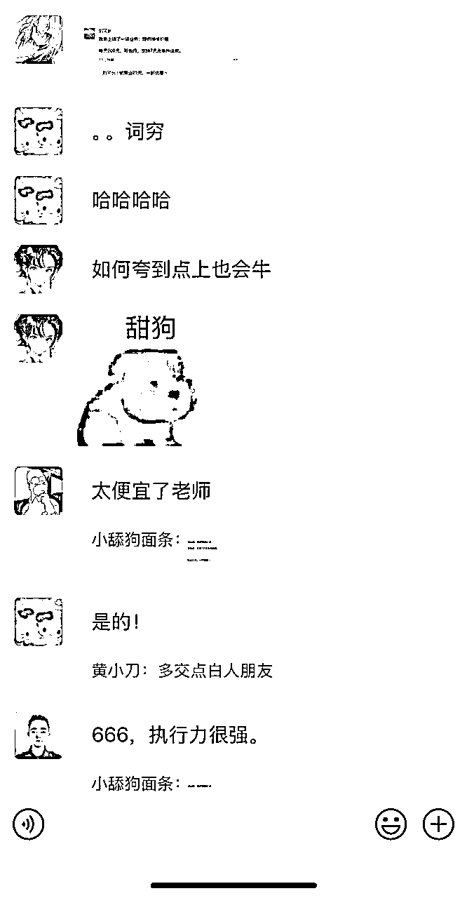
我写的朋友圈被AI探索家大佬“要自己煮面条”看到了，并转发到了“决战舔狗king之巅”微信群里
进而被刀姐看到了
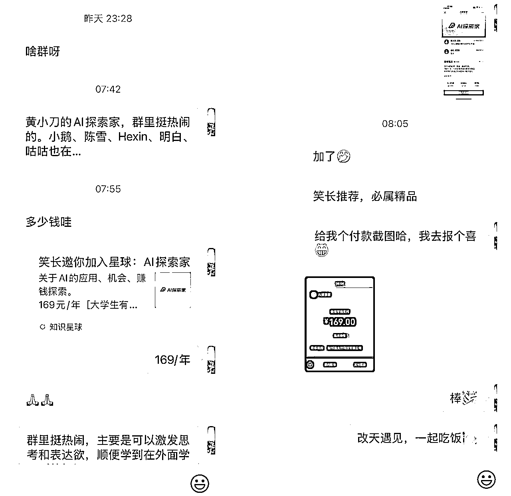
我写了个舔狗训练营第一节课的复盘感悟，发到了微信朋友圈
次日一早就有人通过我加入了AI探索家社群
我及时在“决战舔狗king之巅”群进行了报喜反馈～
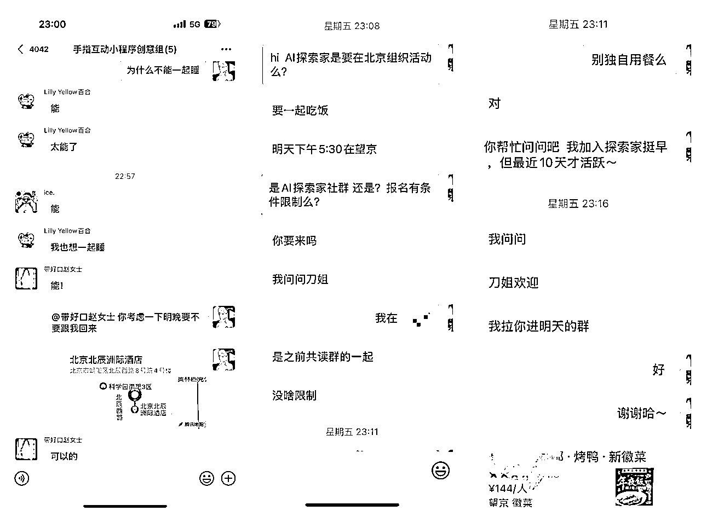
看到刀姐发到群里的图片，里面包含了北京酒店的位置
就咨询了班长“带好口赵女士”，看看能否参加明天的聚会？
积极争取机会的人，更容易被看到～
我把之前写的文章《别独自用餐》复盘感悟文章发到了“别独自用餐群北京站”微信群里
有自己代表作的更容易被看到～
《 》
所有的伟大都无法被规划，以上这些也不是～
是刀姐搭建的场域，激发了我的思考和表达，是灵感的碰撞，是事后的复盘～
我相信，被看见只是时间问题。
有没有普适性的被看见的方法论呢？好，直接上干货！
你得知道Ta在做什么（what），并且Ta为什么做这些事（why）、以及Ta后面会做哪些事（todo list）
你要知道Ta的口碑
你要知道你在未来的路上可以怎么帮Ta，你的相对优势是什么，你们可能合作点是什么
换位思考，假设你是Ta，面对当下，应该怎么做？应该做什么？你有没有具备优势且差异化的方案
在别人成为你的贵人之前，你要先具备成为别人贵人的本事。这样才能持久和长久。
如果你期望别人成为你的贵人，你要想明白在现在或未来，你如何成为别人的贵人
打铁还需自身硬！
如果你具备了以上，被看见是一件顺其自然的事情，毕竟有句老话说的好，“机会留给有准备的人”
而我们所有的被看见，都是为了机会～
恰好，你已经做了充分的准备，甚至做了成为别人的贵人的准备
你说，你能不被看见么？
接下来，进入第三部分：《贵人可遇不可求》
所有的贵人，都是遇到的，不是求来的
唐僧的贵人孙悟空是在唐僧西天取经的路上遇见的～
如果你想遇到贵人，就要树立一个长远的志向，在路上，你自然会遇到贵人～
不要躺平，不要去求，所有的贵人，都在你想做一件事的路上～
你想做AI探索家，就会遇到刀姐，因为这是必经之路～
接下来，进入第四部分：《贵人都是相互的，不存在Ta是你的贵人，你不是Ta的贵人》
根据牛顿第三定律：“力的作用是相互的”
其实贵人也是相互的，不存在Ta是你的贵人，你不是Ta的贵人
还是拿“西游记”举例，唐僧是孙悟空的贵人，因为唐僧拯救了压在五指山下500年的孙悟空；
而孙悟空同样也是唐僧的贵人，陪着他一路降妖除魔、西天取经～
所有的贵人，都在相互成就～
有些是显性的，有些是隐形的，有些周期较长，有些周期较短～
接下来，进入第五部分：《被看见、被认可、被需要、被依赖、被推荐》
被看见、被认可、被需要、被依赖、被推荐，是层层递进的关系
也是检验彼此关系到了什么程度和阶段的度量计～
无论如何，“被看见”总是首位的，你只有被看见了，才有可能发生后面的故事～
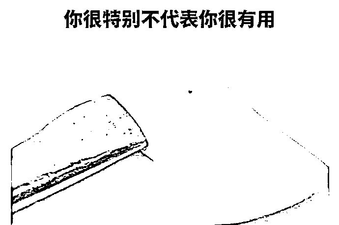
永远记住一点，我们“被看见”的目标是为了“被认可”、“被需要”，不仅仅是为了被看见～
接下来，进入第六部分：《舔狗训练营的终局是什么》
黄渤说：“当你成为明星时，周围全是好人.....”
我觉得，舔狗训练营，终极目标并不是把自己变成舔狗King，而是把自己周围的人、和自己有往来的人变为“舔狗”。
更愿意靠近自己，更愿意与自己分享，更愿意给自己掏心掏肺～
要把自己变强，犹如一个吸引力极强的磁场，让人如沐春风，让人意犹未尽，让人欲罢不能，让人.......
也只有这样，你才能跳出“舔狗之术”，寻找到“舔狗之道”！
所有学到的知识，都要学以致用，下面进入案例应用篇
案例既能巩固理论知识，还是通过案例修正理论，泛化理论的适用场景～
在进入案例之前，我们尝试把碎片化的理论知识抽象为“被看见”的公式～
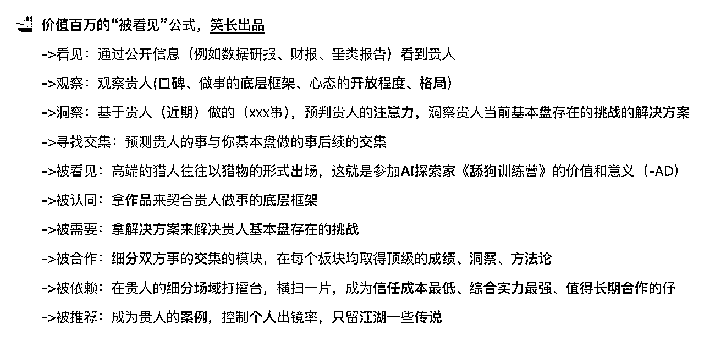
前面通过了我自身的个人案例，拆解复盘了下我是如何被刀姐看见的。
那么，大家如果还没有被刀姐看见，听了前面的分享，接下来怎么做才能被刀姐看见呢？
看到贵人
咱们前面提到了要先让“贵人”看到你，首先你要看到“贵人”，
那么，大家试想一下，你看到了刀姐的什么？
看到了刀姐的探索家星球年度KPI，
还是看到了刀姐的近期帖子，
看到了刀姐的......
洞察：
按照知识点“预判贵人的注意力，洞察贵人当前基本盘存在的挑战”，
我手把手、保姆式的指导大家如何被刀姐看见吧！
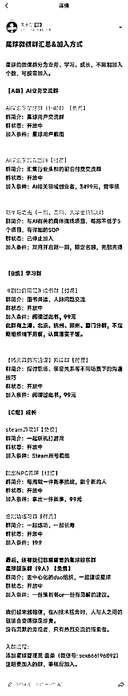
刀姐今天（2025年1月14日）在星球发布了置顶帖《星球微信群汇总&加入方式》，
通过帖子，你看到了什么？
如果你是一个链接有术的高手，一定会看到N多被看见的机会吧～
这些“群”就是刀姐部分感兴趣的注意力
如果你对某一领域有独到的见解、领先的成就，亦或者有趣的想法，
都可以写成文章，发在AI探索家星球里。
在一个星球“被看见”其实很简单，在星主近期感兴趣的领域，发表独到的见解、领先的成就、可行的方案，
没有什么是一篇文章解决不了的，如果不行，就2篇，直到被看见～
行动方案一对应的是“预判贵人的注意力”，这个稍微简单一些，
那么要想更深入一点，如何做呢？
且看“被看见”行动方案二
前面还提到“洞察贵人基本盘存在的挑战”，那么AI探索家的基本盘是什么，刀姐的挑战又是什么呢？
其实，你可以结合AI探索家知识星球来看，
你会看到AI探索家的成员数量还可以进一步提高～
作为一名AI探索家成员，你完全可以把星球对你影响、以及加入星球后的个人成长分享出来，
让好朋友也一起加入这个有趣的生态～
还可以作为一个个体，思考、规划如何吸引更多的同频人：
大学生吸引大学生，
职场人吸引职场人，
old money吸引old money，
new money吸引new money....
发挥自己的相对优势，给星球带来更丰富的内容，更多有趣的人～
AI探索家已经开了几期午餐30计划、新牛马计划、别独自用餐、舔狗训练营等等，
你可以按照这些，按照社群基调，总结活动规律，策划下一场活动，
说不定，被刀姐看到，你就是下一场活动的总导演。
好了，刚才提到了3点行动指南，其实如果你是有心的人，掌握了前面的方法论，会发现很多很多的切入点，
以上行动指南仅仅是抛砖引玉，期望大家都能被刀姐看到！
好的知识理论往往是可以迁移的，那么，如何被生财有术星主亦仁看见呢？
接下来，进入案例应用篇二《如何被生财有术星主亦仁看见》
看到贵人
亦仁是中国最大口碑最好的社群知识星球生财有术的星主。
洞察
还是和上面一样，按照知识点“预判贵人的注意力，洞察贵人当前基本盘存在的挑战”
我手把手、保姆式的指导大家如何被亦仁看见吧！
亦仁在生财有术发布了AI应用超级标，随后亦仁在生财有术开启了AI应用龙珠悬赏～
通过贵人近期动态预判贵人的注意力，这是一条屡试不爽的行动准则之一。
那么，如何能够让亦仁看见呢？
我看到一个生财圈友成体系的写了几篇文章:《AI应用之案例篇》、《AI应用之投放篇》、《AI应用之营销篇》
我想，这位圈友后续应该还会有《AI应用之风控篇》、《AI应用之商业化篇》、《AI应用之私域运营篇》、《AI应用之选品篇》等等
这位圈友其实在用实力说明，在AI应用领域，Ta就是那个最靓的仔～
当这位圈友写到第三篇时，就已经被亦仁看到了，别问我怎么知道的～
在谈“生财有术”的之前，我们先回想一下，我们是谁？
我们是AI探索家，对不对？
我们要用AI来尝试解决生财目前遇到的挑战~
挑战一：生财精华帖太多，帖子太多，如何高效匹配信息和人？
方案一：增加“猜你喜欢”
在网页端增加一个“猜你喜欢”，根据用户填写的个人资料、搜索关键词、点赞/评论/收藏的帖子、用户停留超过5分钟的帖子等等，来推荐“关键词/关键人”相关的帖子。
运用AI技术推荐相似的帖子。
采用灰度测试，如果某人搜索某类关键词超过N(3)次，才出现“猜你喜欢”一栏
方案二：增加“智能问问”悬浮按钮
结合大模型以及帖子的知识库，搭建一个问答bot，你可以通过问答与“信息”进行交互
Q：今天星球有哪些重要信息？
A：今天共有10篇帖子，5篇风向标....
Q：有没有适合我的，比较推荐的？
A : 根据互动数据及您的阅读偏好，推荐您看“被看见”这篇帖子，以下是链接xxx
也许还有更多的解法，欢迎AI探索家们一起出谋划策～
高效匹配人和信息，让高质量的信息加速流动～
也许，我的思考都是错的，不重要，重要的是我结合自身的能力进行了深度思考，以及进行了沙盘演练。
AI应用海外发行是个不错的方向～
为贵人的基本盘创造利润空间或想象空间，也是“被看见”一种的方式～
作为生财有术的一枚小学生，不敢妄议社群之事，所以以上仅仅是供大家深度思考的。
如果有一天，你做到了能够跟一个星球的星主共情的地步
你就彻底融入了社群，彻底“被看见”了～
最后，送给大家一些个人感悟～
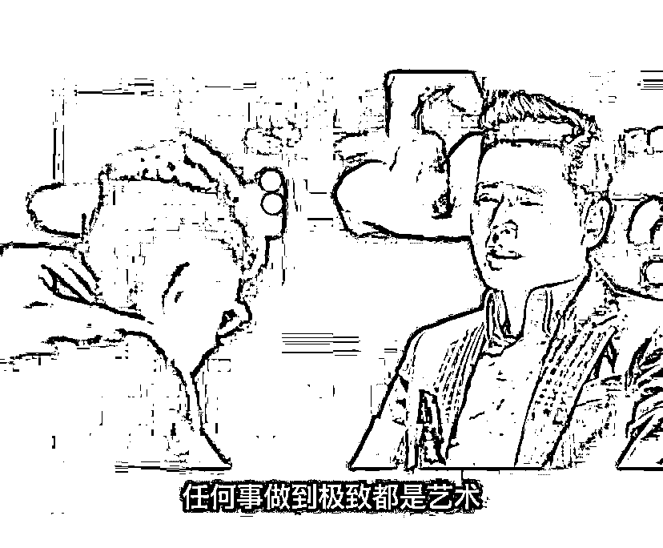
想赢就要敢上场，当你准备充分后，抓住一切机会。
把自己每一次出现都当作自我营销的广告位～
活出真实的自我，不要为了被看见而被看见，真实表达，坦诚沟通，
实事求是，会就是会，不会就是不会～
多做些事，让万事互相效力，
别人第一时间看到的永远是事，然后才是做事的人，在“事”上遇到贵人～
不要把自己当作牛马，
要把自己当作New Money！
自信的笑，开心的笑！
你的笑容就是你遇到贵人的风水！
忘掉所有的方法和技巧，
视人为人，把所有的人当作朋友，
感恩所有遇到的人，将来你就会收获很多贵人！
感谢大家宝贵的时间，第一次分享，也许，我所说的都是错的，但还是期望对您有所触动或启发～
愿大家都能被自己欣赏的人看见，愿大家都能在刀姐的引领下，乘风破浪，勇往值钱!
谢谢大家！！！